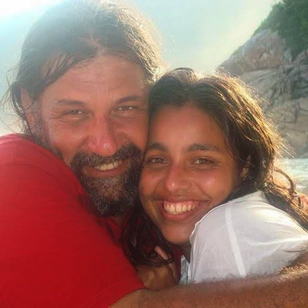

Quem Somos
Somos uma família que acredita que a educação nasce do afeto e se fortalece no brincar. Nosso propósito é abrir um portal educativo para famílias que buscam uma educação mais sensível, criativa e conectada à natureza da criança.



üåø Nossa Missão
Ser um espelho que reflete a essência do brincar livre, ajudando famílias a reconectarem-se com os ritmos naturais da infância.
üíñ Nossos Valores
- Respeito pelo ritmo de cada criança
- Educação como ato de amor
- Conexão com a natureza
- Brincar como linguagem universal